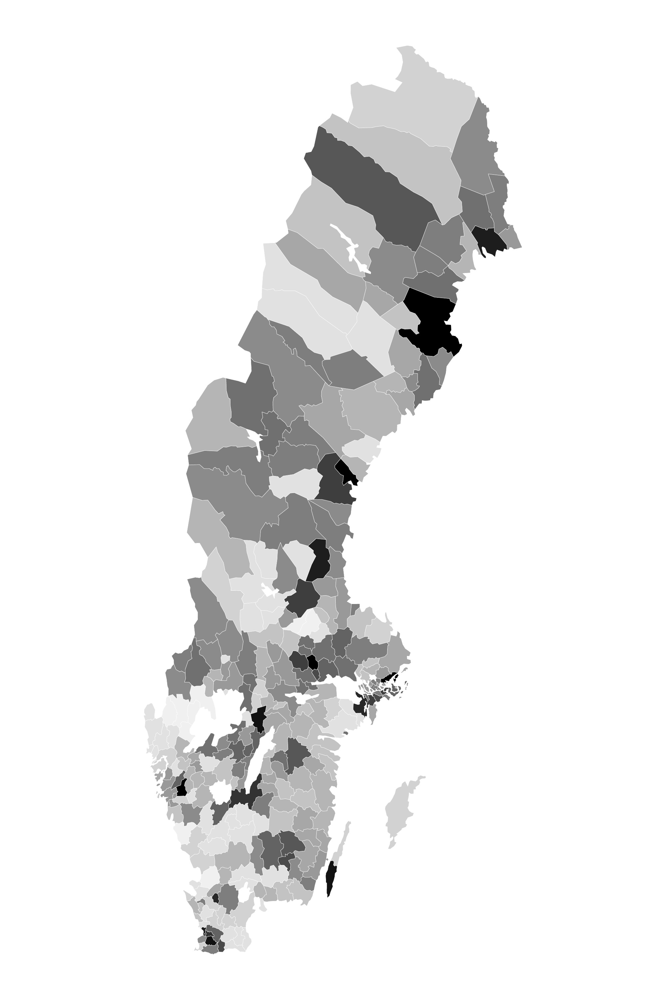
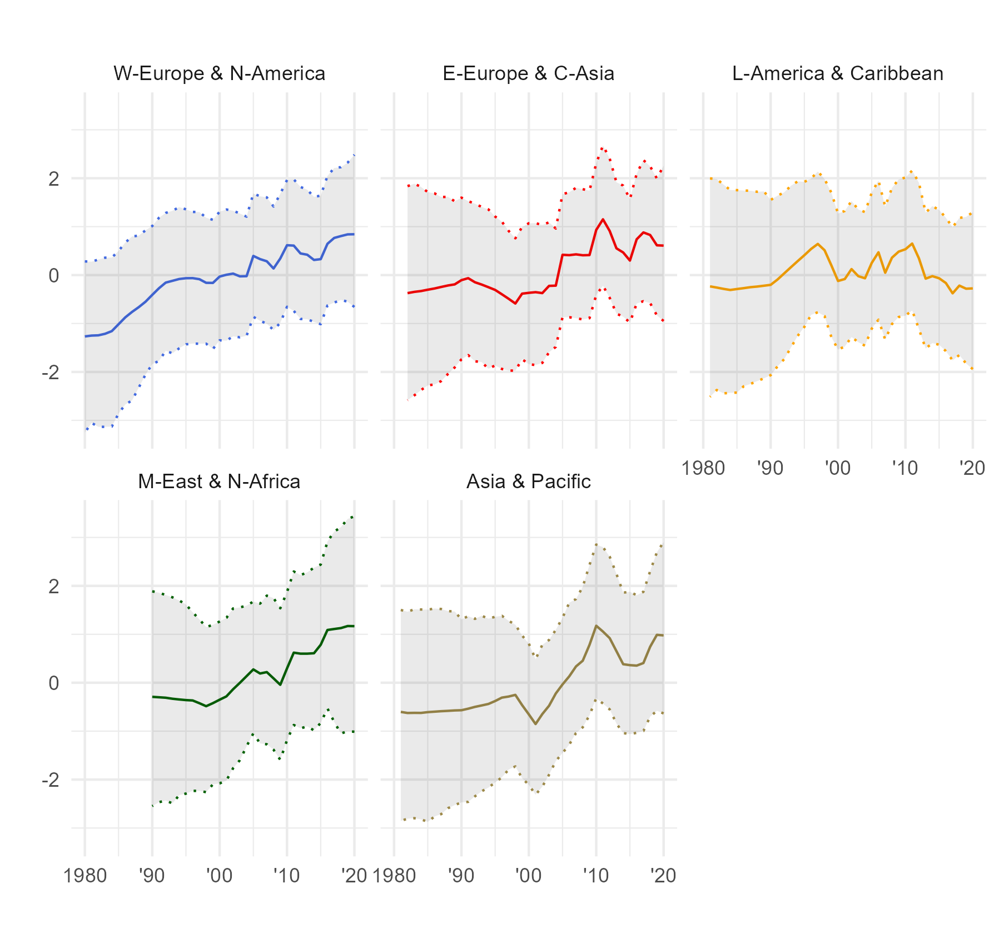
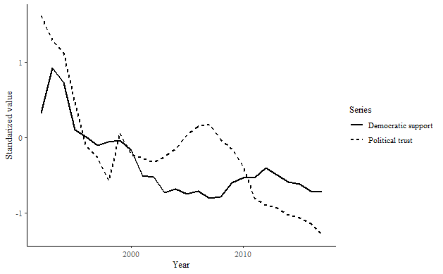
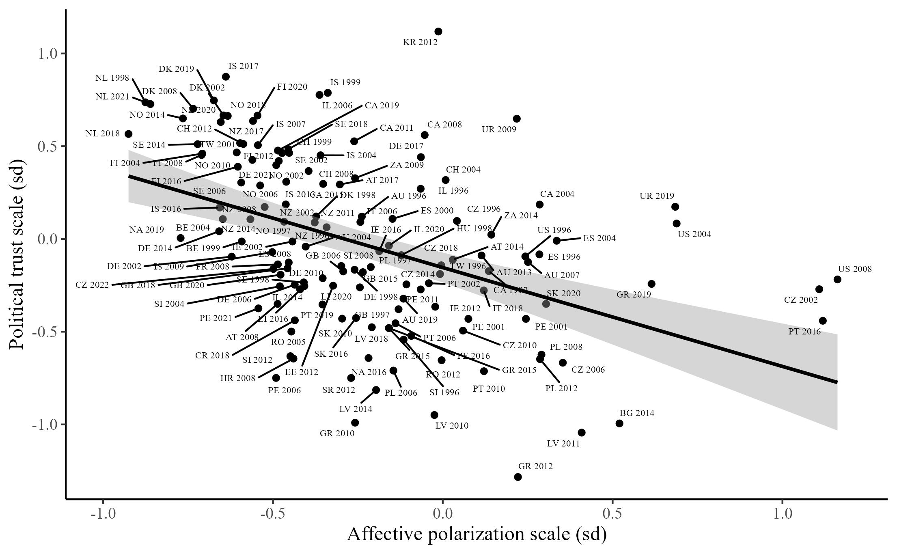
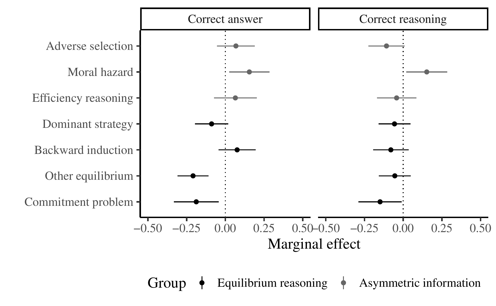
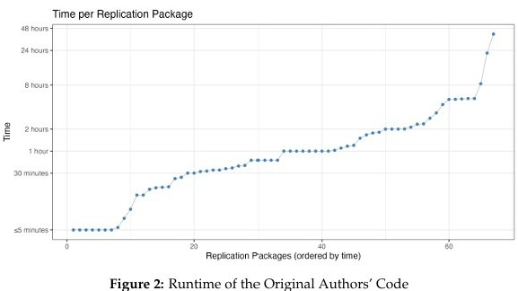

Projects
Attitude formation
Educational reforms and political trust
With Qinya Feng
APSA 2026
Using a staggered compulsory educational reform in Sweden, we show that reforms that reduce ability-based tracking and that bolster civic education can durably increase political trust.
How do we restore trust in democratic politics? It is often argued that education is crucial to alleviating political distrust, but causal evidence is lacking. We address this challenge by analysing a regionally-staggered educational reform in Sweden that lengthened compulsory schooling, reduced social segregation by removing ability-based tracks, and bolstered civic education. Using a staggered difference-in-difference design, we find strong evidence that the reform boosted political trust, especially among those from less privileged backgrounds. Subsequent analyses using a comparative dataset of compulsory schooling reforms suggest that the operative mechanisms are the removal of ability-based tracking and the increased democratic content of the curriculum. We conclude that well-designed educational reforms can alleviate the crisis of trust facing democracies.

Opinion dynamics

Political distrust and preferences for regime type
Revise and resubmit, Journal of Politics
Using Bayesian latent variable measures of trust and democratic support, individual-level panel data, and a survey experiment, I show that political trust causally affects support for democratic rule.
Scholars have long argued that political trust may affect democratic support. However, this claim has rarely been subject to direct empirical tests. I combine three sources of evidence to test whether political trust increases support for democracy and decreases support for authoritarian rule. The first is a country-year panel dataset, created using Bayesian item response models to aggregate available measures of political trust and support for democracy and authoritarian rule, and covering 83 countries over 27 years (total N = 1,553). I then analyse individual-level panel data from the United States and Britain. Finally, I conduct a randomized survey experiment in the United States (N = 4,858) in which I manipulate political trust and test its consequences for support for democracy and authoritarian rule. Across the designs, political trust consistently increases support for democracy and reduces support for authoritarianism. This suggests that the consequences of political trust for democracy may be more substantial than previously thought.

Mass polarization and political distrust
Under review
Using country-year panel data and a survey experiment, I show that aggregate (affective) polarisation causes political distrust.
It is often argued that polarisation among ordinary partisans could harm democracies, and one important way in which this could occur is by reducing trust in democratic political systems. However, existing empirical tests of this question have produced mixed results. I argue that this is because previous studies considered the individual-level correlation between attitude extremity and political distrust. Polarisation - the extent to which people are divided on ideological and/or affective lines - must instead be measured at the level of societies. In this article, when measuring polarisation rather than individual- level attitude extremity, I find that it is likely to undermine trust in democratic political systems. Using panel data covering 86 democracies over 20 years, I find that affective polarisation is negatively related to political trust, although ideological polarisation alone does not appear to be related to political trust. I then conduct a randomised survey experiment in the UK, which suggests that these results are likely to be causal in origin. In sum, it appears that affective polarisation is likely to cause political distrust.

Reproducibility and meta-science
Can artificial intelligence solve strategic decision problems?
With Peter Eso, Eszter Kabos and James Tilley
Revise and resubmit, PLoS One
Large Language Models solve Oxford undergraduate admissions-style game theory problems at similar rates to human candidates, although their performance drops on tasks requiring complex equilibrium reasoning.
This paper evaluates the ability of Large Language Models (LLMs) to correctly answer strategic decision problems in the social sciences drawn from a set of previously non-public university admissions problem sets administered to human candidates from 2008-2024. On average, we find that LLMs perform similarly to human candidates, but that the type of problem affects solution rates. LLMs perform better when faced with problems that require numerical calculations of expected values. They perform worse when given tasks that are not based on well-known ‘text- book’ problems. They also perform worse on tasks that involve complex equilibrium reasoning (such as commitment problems) and tasks that require novel insights. These results suggest that although LLMs perform similarly to human candidates, there remain limitations in their ability to solve undergraduate-level strategic decision problems.

Mass reproducibility in psychological science
With Abel Brodeur, Ghina Abdul Baki, Luna Fazio, et al.
Under review
A large-scale review of reproducibility in published psychology articles that finds that a substantial minority of articles contain discrepancies with major implications for estimates or interpretation.
Concerns about the credibility and reproducibility of published findings have motivated numerous initiatives to improve transparency in psychology. In this article, we present evidence from a large-scale reproducibility initiative conducted in partnership between Psychological Science and the Institute for Replication (I4R). Our project systematically reproduces empirical results published in the journal between 2024 and 2025 using independent research teams. Through a combination of Replication Games and researcher-led initiatives, 67 independent teams examined 44% of the articles (i.e., 64 articles) published during our time frame, documenting data and code availability, checking for coding errors, and deviations from preregistration, and computationally reproducing the main numerical results. We find that the majority of articles provide cleaned data and analysis scripts, though raw data and data-cleaning scripts are shared far less often. Computational reproducibility depends strongly on the starting point: 58.2% of articles are fully reproducible from final analysis data, but only 28.4% are fully reproducible from raw data. Teams identify coding errors or statistical reporting inconsistencies in 63% of articles, although most issues are minor; 40.5% of the articles flagged with coding or statistical reporting issues contain discrepancies with potentially major implications for estimates or interpretation. Preregistration is common (74.6% of articles), yet 84% of preregistered articles deviate from their pre-analysis plan, and nearly half of these deviations go unacknowledged. Our findings provide new insights into the reliability of empirical results in a leading psychology journal and highlight the value of structured mass reproducibility initiatives.
